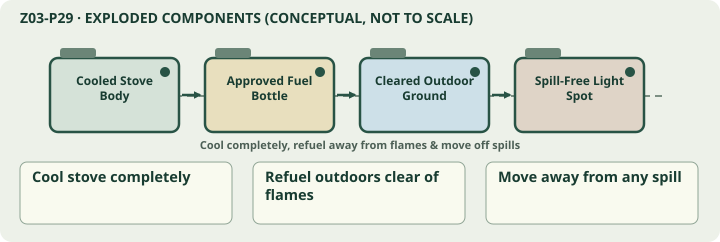

Z03-P29 · Fire and ignition · New manuscript
Refuel liquid stoves safely on cleared ground away from ignition
Prevent fuel-vapor flash fires and spilled-fuel flare-ups when filling or priming liquid-fuel camp stoves.
When it applies · Operating white-gas, kerosene or multi-fuel liquid camp stoves outdoors.
Equipment · Manufacturer-approved fuel bottle and pour spout, cooled stove, level cleared mineral-soil surface and dry rag.

Actions
- Extinguish the stove completely and wait until the burner, windscreen and fuel tank feel cool before cracking open any fuel cap or pump assembly.[C15]
- Refuel strictly outdoors on level bare ground well away from tents, campfires, lit stoves, smoking materials and food-preparation areas.[C15, C02]
- Wipe away any fuel drips, cap the supply bottle tightly and move the stove several steps away from any spilled ground fuel before attempting to light it.[C15, ED]
Failure recognition · Cracking a warm stove pump open beside a companion's burning stove or lighting a fuel-soaked stove right over a fresh white-gas spill.[C15]
Verify · Confirm stove body is cool, nearby ignition sources are out, fuel bottle is sealed and stove stands on clean dry ground away from drips.[C15, ED]
Stop or change course · If fuel leaks from pump seals, hose threads or tank seams during pressurization, depressurize outdoors away from ignition and retire the stove from service.[C15, C05]
Evidence and editorial notes
- C02 · USDA Forest Service / Smokey Bear · Smokey Bear’s Campfire Safety Guide (agency PDF)
- Section: Build your campfire; choose a location · Conditions: Where campfires are currently permitted
Support: Use an established fire ring where required or available. Protect the area from nearby combustible materials, avoid windy conditions and keep water ready.
Limitations: Site clearances vary by fuel load, slope, and wind; no universal safe radius fits all terrain. · Conflicting evidence: None; aligns with USFS-FIRE.
Editorial note: Grounds site-selection and ring-preparation procedures. · Specialist reviewer: Fire prevention and land management
Primary source · checked 2026-11-24 - C05 · CPSC · Portable Heaters and Camping Equipment (current web edition)
- Section: Carbon monoxide poisoning from portable camping equipment · Conditions: Tents, campers, vehicles and other enclosed spaces
Support: Fuel-burning camping equipment can lead to fatal carbon monoxide buildup in enclosed spaces.
Limitations: High altitude increases incomplete combustion and CO production. · Conflicting evidence: None; aligns with CDC-CO and NPS guidance.
Editorial note: Hard-stop prohibition against indoor/vestibule/tent combustion. · Specialist reviewer: Carbon monoxide safety and emergency medicine
Primary source · checked 2026-11-24 - C15 · NPS · Wildland Fire Safety (current web edition)
- Section: Wildland Fire Safety > Campfires and Stoves · Conditions: Outdoor cooking with portable liquid or canister stoves
Support: Operate stoves on level cleared ground away from tents and dry fuels, cool completely before refueling, and move away from any spilled fuel before lighting.
Limitations: Fuel canisters behave differently in cold weather and high elevation; follow manufacturer limits. · Conflicting evidence: None; aligns with CPSC-C and USFS-FIRE.
Editorial note: Governs stove setup, refueling isolation, and spill failure recognition. · Specialist reviewer: Portable appliance safety and fire prevention
Primary source · checked 2026-11-24
Source lineage · NPS wildland fire safety and USFS campfire guidance; new manuscript · Classification · New manuscript.